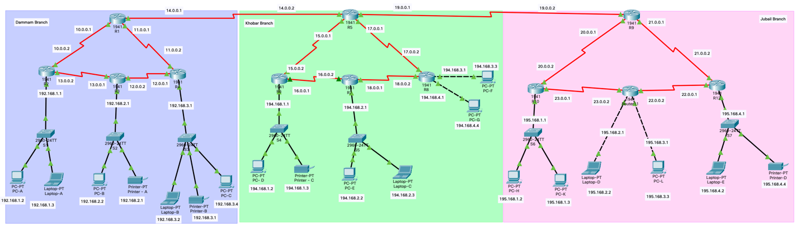
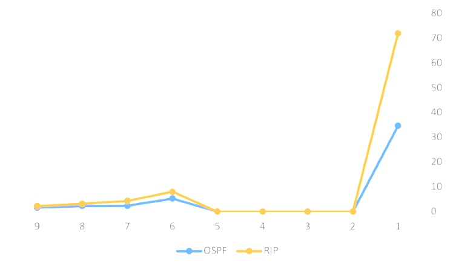
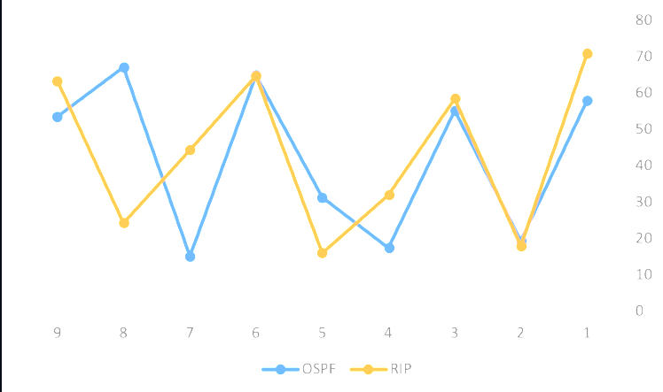

📋 Project Overview
This project demonstrates the design and implementation of a comprehensive network infrastructure for a non-profit educational organization. The network supports three interactive learning halls equipped with essential computing resources including workstations, printers, and mobile devices across multiple geographically distributed branches.
The primary objective is to compare the performance characteristics of two widely-deployed dynamic routing protocols: RIP (Routing Information Protocol) and OSPF (Open Shortest Path First) through practical network simulation and quantitative packet loss analysis.
🛠️ Technologies & Tools
📊 Network Infrastructure Statistics
🔬 Methodology
- ✓ Design and configure dual network topologies supporting multi-branch educational facilities with distributed interactive learning environments
- ✓ Implement and simulate both RIP and OSPF routing protocols to analyze performance variations under identical network conditions
- ✓ Conduct systematic packet transmission tests between network endpoints to quantify protocol efficiency
- ✓ Calculate packet loss percentage using the formula:
(Packets Sent - Packets Received) / Packets Sent × 100
🗺️ Network Topology
The network architecture implements a hierarchical design with 12 interconnected routers forming the backbone infrastructure. Strategic placement of switches and end-user devices creates redundant paths and fault tolerance.
📋 IP Addressing Scheme
| Device | Interface | IP Address | Subnet Mask | Default Gateway |
|---|---|---|---|---|
| R1 | S0/1/1 (DCE) | 14.0.0.1 | 255.0.0.0 | N/A |
| R1 | S0/0/1 | 10.0.0.1 | 255.0.0.0 | N/A |
| R1 | S0/1/0 | 11.0.0.1 | 255.0.0.0 | N/A |
| R2 | G0/0 | 192.168.1.1 | 255.255.255.0 | N/A |
| R2 | S0/0/0 (DCE) | 13.0.0.2 | 255.0.0.0 | N/A |
| R2 | S0/0/1 (DCE) | 10.0.0.2 | 255.0.0.0 | N/A |
| R3 | S0/0/0 | 13.0.0.1 | 255.0.0.0 | N/A |
| R3 | G0/0 | 192.168.2.1 | 255.255.255.0 | N/A |
| R3 | S0/0/1 | 12.0.0.2 | 255.0.0.0 | N/A |
| R4 | S0/1/0 (DCE) | 11.0.0.2 | 255.0.0.0 | N/A |
| R4 | S0/0/0 (DCE) | 12.0.0.1 | 255.0.0.0 | N/A |
| R4 | G0/0 | 192.168.3.1 | 255.255.255.0 | N/A |
| PC-A | Fa0 | 192.168.1.2 | 255.255.255.0 | 192.168.1.1 |
| Laptop-A | Fa0 | 192.168.1.3 | 255.255.255.0 | 192.168.1.1 |
| PC-B | Fa0 | 192.168.2.2 | 255.255.255.0 | 192.168.2.1 |
| Additional device addressing details available in full documentation | ||||
⚙️ Router Configuration Scripts
Download individual configuration scripts for each router and routing protocol. Each script is optimized for Cisco IOS and includes interface configuration, IP addressing, and protocol enablement.
Interface Configuration Scripts
Routing Protocol Configuration
⚠️ Important: These configuration scripts should be applied systematically. First configure all router interfaces using the R1-R4 scripts, then deploy either RIP or OSPF routing protocol across all routers in the topology. Ensure DCE interfaces have clock rate configured for serial connections.
💻 Sample Configuration: Router R1
configure terminal
# Configure Serial0/0/1
interface Serial0/0/1
ip address 10.0.0.1 255.0.0.0
no shutdown
exit
# Configure Serial0/1/0
interface Serial0/1/0
ip address 11.0.0.1 255.0.0.0
no shutdown
exit
# Configure Serial0/1/1 (DCE)
interface Serial0/1/1
ip address 14.0.0.1 255.0.0.0
clock rate 64000
no shutdown
exit
end
write memory🔄 RIP Protocol Configuration
The RIP (Routing Information Protocol) implementation uses distance-vector routing with hop count as the metric. This configuration must be applied to all 12 routers to establish full network convergence.
configure terminal
router rip
network 10.0.0.0
network 11.0.0.0
network 12.0.0.0
network 13.0.0.0
network 192.168.1.0
network 192.168.2.0
network 192.168.3.0
# Additional networks...
exit
end
write memory🔄 OSPF Protocol Configuration
The OSPF (Open Shortest Path First) implementation uses link-state routing with cost as the metric. All networks are configured within Area 0 (backbone area) for optimal performance in this topology.
configure terminal
router ospf 1
network 10.0.0.0 0.255.255.255 area 0
network 11.0.0.0 0.255.255.255 area 0
network 12.0.0.0 0.255.255.255 area 0
network 13.0.0.0 0.255.255.255 area 0
network 192.168.1.1 0.0.0.255 area 0
network 192.168.2.1 0.0.0.255 area 0
network 192.168.3.1 0.0.0.255 area 0
# Additional networks...
exit
end
write memory📊 Performance Analysis: RIP Protocol
| Test # | Source | Destination | Sent | Received | Packet Loss |
|---|---|---|---|---|---|
| 1 | PC-A | PC-D | 4 | 3 | 25% |
| 2 | Laptop-D | PC-E | 4 | 3 | 25% |
| 3 | PC-A | PC-B | 4 | 4 | 0% |
| 4 | PC-C | PC-L | 4 | 3 | 25% |
| 5 | PC-E | PC-D | 4 | 4 | 0% |
| 6 | PC-L | PC-H | 4 | 4 | 0% |
RIP Performance Summary:
Total packets transmitted: 24
Packets received: 21
Packets lost: 3
Average packet loss: 12.5%
📊 Performance Analysis: OSPF Protocol
| Test # | Source | Destination | Sent | Received | Packet Loss |
|---|---|---|---|---|---|
| 1 | PC-A | Laptop-B | 4 | 4 | 0% |
| 2 | Laptop-C | PC-D | 4 | 4 | 0% |
| 3 | PC-L | PC-K | 4 | 4 | 0% |
| 4 | PC-H | Laptop-C | 4 | 4 | 0% |
| 5 | PC-K | Laptop-C | 4 | 4 | 0% |
| 6 | PC-L | Laptop-E | 4 | 3 | 25% |
OSPF Performance Summary:
Total packets transmitted: 24
Packets received: 23
Packets lost: 1
Average packet loss: 4.2%
💻 CPU Utilization Comparison
CPU utilization analysis reveals significant efficiency differences between the two routing protocols. In the RIP protocol, CPU utilization reached approximately 79%, while the OSPF protocol demonstrated considerably lower resource consumption at 42%.
Key Insight: OSPF's superior CPU efficiency (42% vs 79%) demonstrates its optimized algorithm design, making it more suitable for production environments where resource conservation is critical. The 37% reduction in CPU utilization allows for better scalability and concurrent service support.
🧠 Memory Usage Comparison
Memory consumption analysis shows both protocols maintain high memory utilization for routing table maintenance. In the RIP protocol, memory usage was measured at 88%. The OSPF protocol showed slightly improved performance with memory usage at 83%.
Analysis: While both protocols require substantial memory resources for routing information storage, OSPF's 5% improvement (83% vs 88%) demonstrates better memory management. OSPF's link-state database, though more complex, utilizes memory more efficiently than RIP's distance-vector approach.
🎯 Key Findings & Conclusions
Through comprehensive testing and analysis, this project demonstrates significant performance differences between RIP and OSPF routing protocols in a multi-branch educational network environment:
- OSPF demonstrated superior performance with a packet loss rate of 4.2% compared to RIP's 12.5%
- CPU efficiency was significantly better with OSPF (42% utilization) versus RIP (79% utilization), representing a 37% reduction in CPU consumption
- Memory optimization showed OSPF using 83% memory compared to RIP's 88%, demonstrating more efficient resource management
- Network convergence was notably faster with OSPF's link-state algorithm
- OSPF's scalability advantages become evident in complex topologies with multiple redundant paths
- RIP's simplicity may still be suitable for smaller network segments with limited hop counts
The results validate OSPF as the recommended routing protocol for enterprise and educational networks requiring high availability, fast convergence, and efficient path selection. However, RIP remains a viable option for smaller deployments where administrative simplicity is prioritized over performance optimization.
💡 Recommendation: For production deployments in educational institutions with multiple branches, OSPF is the optimal choice due to its superior packet delivery rates (4.2% vs 12.5% loss), significantly lower CPU utilization (42% vs 79%), better memory efficiency (83% vs 88%), and faster convergence characteristics.
📌 Project Information
Category
Cisco Technologies
Complexity
Advanced
Simulation Tool
Cisco Packet Tracer
Network Scale
Enterprise